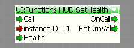
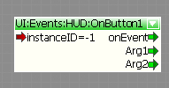
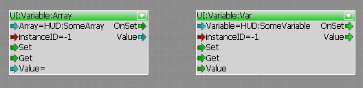
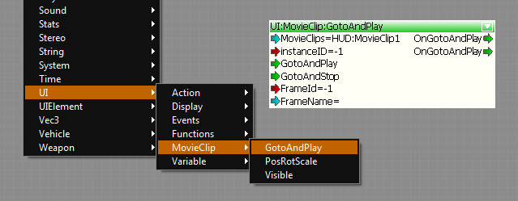
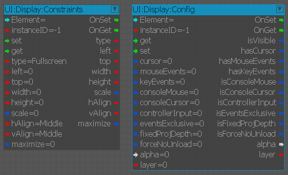

Overview
An UI element represents and defines a Flash asset (.swf file), that is usable by the engine. All UI Elements are defined as an XML script file located in GameSDK/Libs/UI/UIElements. The XML file contains all the information, which the engine needs in order to use the Flash asset in game.
Defining an UI Element
So imagine we have a HudElements Flash asset and we want to use it in the engine. You have to create a HudElements.xml file and save it in GameSDK/Libs/UI/UIElements as previously mentioned.
<UIElements name="HudElements"> <!-- Group name for this elements -->
<!-- definition of an UI element named "HUD". This name in combination with instance id is used to identify a UI element at runtime. -->
<UIElement name="HUD">
<!-- gfx/swf file for this UI element. This is the path to the actual flash asset.
in this example the HUD element is using "Game/Libs/UI/HUD.gfx" file. This can potentially be
a more complicated path e.g. in cases when you have a lot of UI elements and you want to have
better structure, so that everything is easy to find (split UI elements in Menu and HUD elements)
-->
<GFx file="HUD.gfx" layer="1">
<!-- the align mode of this element. These values will be discussed in a special section later on. -->
<Constraints>
<Align mode="dynamic" halign="center" valign="center" scale="1" max="1" />
</Constraints>
</GFx>
<!-- available functions -->
<functions>
</functions>
<!-- available events that are raised by the Flash asset -->
<events>
</events>
<!-- available variables -->
<variables>
</variables>
<!-- available arrays -->
<arrays>
</arrays>
<!-- available movieclips -->
<movieclips>
</movieclips>
</UIElement>
<!-- definition of another UI element named "LoadingScreen" -->
<UIElement name="LoadingScreen">
...
</UIElement>
</UIElements>
The sample also shows, that we can define multiple UI elements in one XML file, but it is a good practice to avoid this and create a separate XML file per UI element, to keep everything easy to find and manage complexity easier. It is up to the developer to decide how to organize this.
The XML script contains blocks for functions, events, variables, arrays, and movie clips. These blocks are used by the engine to create Flowgraph nodes automatically. The nodes can be used than in UI Actions or Flowgraph to script UI logic.
Functions
Functions that should be callable from outside ( UI Actions / Flowgraph ) need to be defined in the <functions> block of the element.
e.g. an actionscript function to set a health bar:
function setHealth(iHealth:Number): void
{
// set a health bar
}
This can be defined in the xml as:
<function name="SetHealth" funcname="setHealth">
<param name="Health" desc="Players current health" type="int"/>
</function>
- The <function> block declares the function.
- name="..." is the name of the function that is visible in the Flowgraph and funcname="..." is the real name of the function in the actionscript.
- The <param> block declares, what parameters the function is supposed to receive.
- name="..." is the name of the parameter as displayed in the Flowgraph node. (the function can contain multiple parameters)
- desc="..." is the text, that will appear, if a user hovers over the parameter in Flowgraph. This is used to help other users, when they are using your Flowgraph nodes. If they don't know what a parameter is for, they can check the user friendly description provided by the developer.
- type="..." is the type of the variable. It can be one of the following: int / bool / string / float . If you dont specify anything, the parameter will be of type "any" and node will try to convert the incoming value and pass it to Flash. It is a good practice to specify your parameter type to avoid potential problems.
The system will automatically create a node for the Flowgraph, with which we can call this function.

It is also possible to define functions that are not in the rootspace of the Flash file, e.g.
<function name="SetHealth" funcname="myHealthMovieClip.mySubMovieClip.setHealth">
<param name="Health" desc="Players current health"/>
</function>Events
To get notification about some user interaction, e.g. if a button was pressed, events can be defined in the <events> block. To trigger an event in your actionscript code you have to call fscommand("commandString"). These fscommands are handled by the engine.
e.g. in the onPress function of a button you can call fscommand with the string "onMyButtonPressed" and some arguments.
myButton.onPress = function()
{
var args:Array = new Array();
args.push(argument1);
args.push(argument2);
fscommand("onMyButtonPressed", args);
}
To handle this event add a <event> tag into the <events> list:
<event name="OnButton1" fscommand="onMyButtonPressed">
<param name="Arg1" desc="Some argument"/>
<param name="Arg2" desc="Another argument"/>
</event>
The system creates a node to handle this event:

Variables, Arrays and MovieClips
Access to an array or a variable can also be defined in the xml file.
Just add a <variable> tag into the <variables> block, an <array> tag to the <arrays> block, or a <movieclip> tag into the <movieclips> block.
<variables>
<variable name="SomeVariable" varname="someVariable"/>
<variable name="TextField" varname="_root.myTextfield.text"/>
</variables>
<arrays>
<array name="SomeArray" varname="_root.mc2.someArray"/>
</arrays>
<movieclips>
<movieclip name="MovieClip1" instancename="_root.Mc1"/>
<movieclip name="MovieClip2" instancename="_root.Mc1.subMc"/>
</movieclips>
To get or set a variable select the variable in the dropdown list of the UI:Variable:Var or UI:Variable:Array flownode.

Arrays are comma separated strings.
You can also access your defined MovieClips via FlowNodes.

Displaying a UI Element
To show or hide a UI element use the UI:Display:Display node. You can select the element in the drop-down list. If the element is not in the list, this means there is something wrong with the XML script file defining the Flash asset.
To setup the behavior and the constraints use the UI:Display:Config and UI:Display:Constraints nodes.

It is also possible to initialize all of those settings in the XML file. Keep in mind that, by doing this all of your UI Elements of this type will share the same configuration / constrains (it is still possible to customize it on per instance basis).
<UIElement name="HUD" mouseevents="1" keyevents="1" cursor="1" console_mouse="1" console_cursor="1">
<GFx file="HUD.gfx" layer="1" alpha="0.5">
<!-- the align mode of this element -->
<Constraints>
<Align mode="fullscreen" />
<!-- <Align mode="dynamic" halign="center" valign="center" scale="1" max="1" /> -->
<!-- <Align mode="fixed" /> -->
<!-- <Position top="20" left="20" width="200" height="200" /> -->
</Constraints>
</GFx>
...
</UIElement>
Constraints
There are three modes ("type") to place the asset on the screen:
Type | Description |
|---|---|
fixed | In this mode the Flash asset is displayed on a fixed position, defined by a top, left, width and height value. |
dynamic | This mode aligns the asset on anchors. For vertical alignment it is possible to align the Flash element at the "top", "center" or "bottom", |
fullscreen | In this mode the viewport of the asset is same as the render viewport. If scale is set to "1" the asset is stretched to fit the complete screen, otherwise not. |
scale | If set to "1", it tries to scale the element to the maximum without deforming the aspect ratio. If set to "0", it will not scale the Flash asset. |
maximize | If set to "1", it will maximize the element so that 100% of the screen is covered (this might cause that some parts of the element are cut-off) |
Configuration
Configuration | Description |
|---|---|
cursor | 0=disabled, 1=enabled, if enabled a hardware mouse cursor is visible while the Flash element is displayed. |
mouseEvents | 0=disable, 1=enabled, if enabled mouse events are send to the Flash file (mouse-clicks and movement. |
keyEvents | 0=disabled, 1=enabled, if enabled key events are send to the Flash element. |
consoleMouse | 0=disabled, 1=enabled, if enabled the controller works as a mouse on console (thumb-stick). Only if mouseevents are enabled. |
consoleCursor | 0=diabled, 1=enabled, if enabled a hardware cursor is displayed on console as well. Only if cursor is enabled. |
controllerInput | 0=disabled, 1=enabled, if enabled the flash file will receive automatically controller events from the game. |
eventsExclusive | 0=disabled, 1=enabled, if this is enabled this indicates that the flash file captures all the input events coming from the game exclusively. |
fixedProjDepth | If set to true this element will use pseudo 3D mode. The _z value of each movie-clip will only affect its size to give the feeling of "correct" depth. |
forceNoUnload | If set to true this element will not be unloaded on level unload (flag will be applied to all instances)! |
layer | 0 to n, defines in which order the elements are displayed (if more than one Flash element is visible). |
alpha | 0 to 1, the background alpha of the Flash element. |
Instancing
What is the purpose of the "InstanceID" port in all the UI nodes? With this instance ID you can have more than one instance of a particular type of Flash asset and dispatch commands only to that node. The "InstanceID" port of any UI node defines which instance should be affected by this node. If you use a node with a new instance ID it will automatically create the new instance of this Flash asset.
If you use "-1" as the instance ID, the node will affect all instances of this UI element, which are currently available (if there are none, it will create one).
If you use "-2" as the instance ID, it will trigger the node functionality on all initialized instances of this UI element.
Functions Reserved and Used by the Engine
There are some special actionscript functions that are automatically called by the UI system, when certain conditions are fulfilled.
These functions have to be defined in the rootspace of your actionscript and don't need to be specified in the UI Element XML file.
// _platformID can be
// FLASH_PLATFORM_PC 0
// FLASH_PLATFORM_DURANGO 1
// FLASH_PLATFORM_ORBIS 2
function cry_onSetup(_platformID)function cry_onShow()function cry_onHide()function cry_onResize(_intWidth, _intHeight)function cry_requestHide()// _intButton can be one of the following
//_global.INPUT_CONTROLLER_UP = 0;
//_global.INPUT_CONTROLLER_DOWN = 1;
//_global.INPUT_CONTROLLER_LEFT = 2;
//_global.INPUT_CONTROLLER_RIGHT = 3;
//_global.INPUT_CONTROLLER_A = 4;
//_global.INPUT_CONTROLLER_B = 5;
//_global.INPUT_CONTROLLER_X = 12;
//_global.INPUT_CONTROLLER_Y = 13;
//_global.INPUT_CONTROLLER_START = 6;
//_global.INPUT_CONTROLLER_BACK = 7;
//_global.INPUT_CONTROLLER_SHOULDER_LEFT = 8;
//_global.INPUT_CONTROLLER_TRIGGER_LEFT = 9;
//_global.INPUT_CONTROLLER_SHOULDER_RIGHT = 10;
//_global.INPUT_CONTROLLER_TRIGGER_RIGHT = 11;
function cry_onController(_intButton,_bReleased)function cry_onVirtualKeyboard(_bPressed,_strKeyName) // bPressed indicates whether the has been pressed and the _strKeyName gives the virtual key name as stringfscommand("cry_hideElement"); // Case sensitive